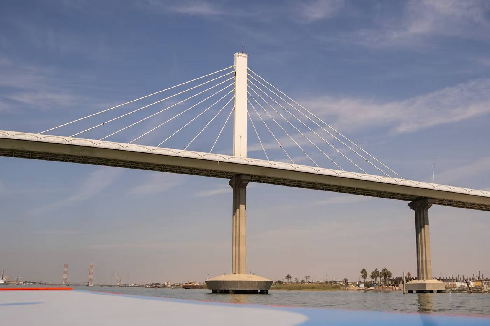
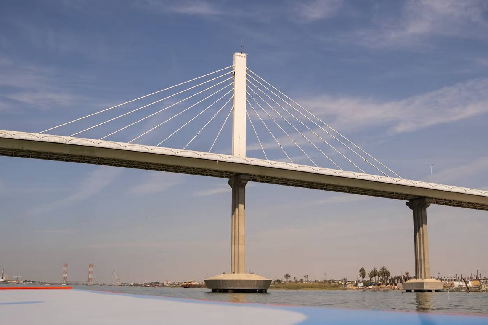
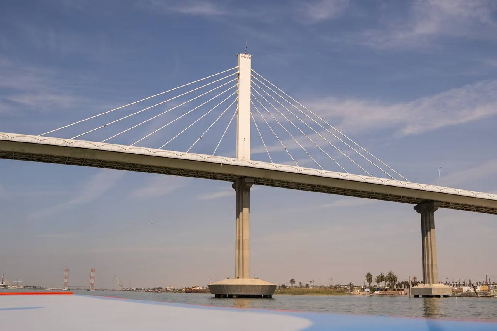

البصرة تتميز بعدد من المعالم السياحية المميزة مثل شط العرب، كورنيش البصرة، وميناء البصرة. يتمتع السياح بجوها الساحلي الجميل.
 


أخبار البصرة: سيتم تحديث الأخبار قريباً...

البصرة تتميز بعدد من المعالم السياحية المميزة مثل شط العرب، كورنيش البصرة، وميناء البصرة. يتمتع السياح بجوها الساحلي الجميل.
البصرة تعد مركزاً مهماً في الاقتصاد العراقي حيث تقع فيها أكبر حقول النفط في العراق. يتم استخراج النفط الخام من حقول مثل الرميلة.
يبلغ عدد سكان البصرة أكثر من 3 ملايين نسمة حسب آخر التعدادات. وهي إحدى أكبر المدن في العراق.
تعتبر البصرة مدينة تاريخية قديمة، حيث كانت مركزاً هاماً للتجارة والعلوم في العصور الإسلامية. تحتوي على العديد من الآثار والمواقع التاريخية.